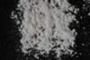

|
|
(For further information on spectroscopy, see:
http://speclab.cr.usgs.gov)
TITLE: Tremolite NMNH117611 DESCRIPT
DOCUMENTATION_FORMAT: MINERAL
SAMPLE_ID: NMNH117611
MINERAL_TYPE: Inosilicate
MINERAL: Tremolite (Amphibole group)
FORMULA: Ca2Mg5Si8O22(OH)2
FORMULA_HTML: Ca2Mg5Si8O22(OH)2
COLLECTION_LOCALITY: Canada
ORIGINAL_DONOR: Smithsonian Institution
CURRENT_SAMPLE_LOCATION: USGS Denver Spectroscopy Laboratory
ULTIMATE_SAMPLE_LOCATION: USGS Denver Spectroscopy Laboratory
SAMPLE_DESCRIPTION:
Forms series with Actinolite and Ferroactinolite.
"Results of petrographic examination: One 21.41g piece, deep brown, and translucent. Part of a single crystal with euhedral faces. Very, very small amount of calcite contamination. Wash with HCl. Under microscope, appears to be virtually all pure, clean tremolite with a very small amount less than 1% of low refractive index impurity. Refractive index indicates very little iron."
Salisbury, J. W., Walter, L. W., and Vergo, N., 1987, Mid-Infrared (2.1-25µm) Spectra of Minerals: First Edition, U.S. Geological Survey Open File Report 87-263.
IMAGE_OF_SAMPLE:

END_SAMPLE_DESCRIPTION.
XRD_ANALYSIS:
Tremolite plus a trace of mica.
Salisbury, J. W., Walter, L. W., and Vergo, N., 1987, Mid-Infrared (2.1-25µm) Spectra of Minerals: First Edition, U.S. Geological Survey Open File Report 87-263.
END_XRD_ANALYSIS.
COMPOSITIONAL_ANALYSIS_TYPE: EM(WDS) # XRF, EM(WDS), ICP(Trace), WChem
| COMPOSITION KEYWORD |
Oxide ASCII |
Amount | Weight Percent, % |
Oxide html |
|---|---|---|---|---|
| COMPOSITION: | SiO2 | 54.60 | wt% | SiO2 |
| COMPOSITION: | TiO2 | 0.41 | wt% | TiO2 |
| COMPOSITION: | Al2O3 | 1.88 | wt% | Al2O3 |
| COMPOSITION: | FeO | 2.25 | wt% | FeO |
| COMPOSITION: | MnO | 0.19 | wt% | MnO |
| COMPOSITION: | MgO | 23.13 | wt% | MgO |
| COMPOSITION: | CaO | 8.82 | wt% | CaO |
| COMPOSITION: | Na2O | 5.54 | wt% | Na2O |
| COMPOSITION: | K2O | 1.42 | wt% | K2O |
| COMPOSITION: | Total | 98.23 | wt% |
COMPOSITION_TRACE:
COMPOSITION_DISCUSSION:
"Microprobe analysis shows sample to be homogeneous within and between grains. It has extremely high soda and potash. Thus chemically it is more towards richterite than tremolite. Average of 10 analyses."
Salisbury, J. W., Walter, L. W., and Vergo, N., 1987, Mid-Infrared (2.1-25µm) Spectra of Minerals: First Edition, U.S. Geological Survey Open File Report 87-263.
END_COMPOSITION_DISCUSSION.
MICROSCOPIC_EXAMINATION:
END_MICROSCOPIC_EXAMINATION.
SPECTROSCOPIC_DISCUSSION:
END_SPECTROSCOPIC_DISCUSSION.
SPECTRAL_PURITY: 1c2b3b4_ # 1= 0.2-3, 2= 1.5-6, 3= 6-25, 4= 20-150 microns
| LIB_SPECTRA_HED: | where | Wave Range | Av_Rs_Pwr | Comment |
|---|---|---|---|---|
| LIB_SPECTRA: | splib04a r 5044 | 0.2-3.0µm | 200 | g.s.= |
| LIB_SPECTRA: | splib05a r 6899 | 0.2-3.0µm | 200 | g.s.= |
| LIB_SPECTRA: | splib06a r 23109 | g.s.= | ||
| LIB_SPECTRA: | splib06a r 23122 | g.s.= |
{kind=link}